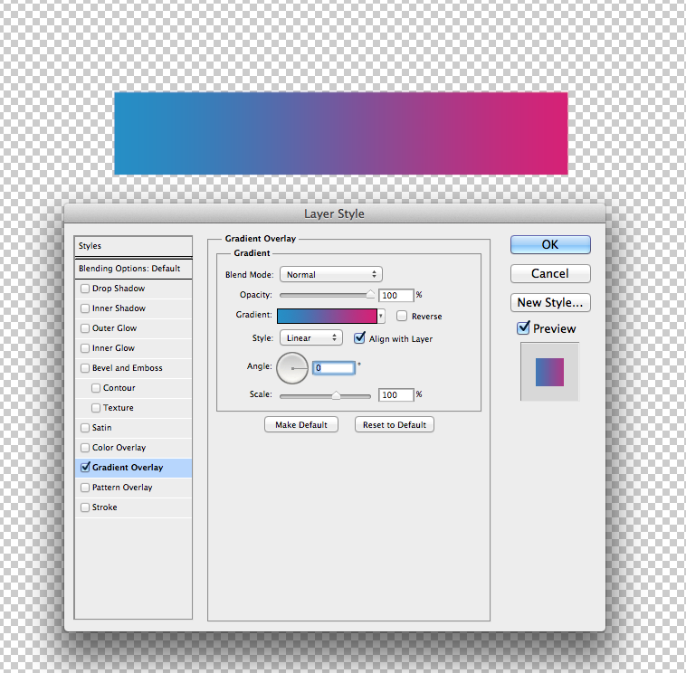

Gradients can be one of the easier properties to convert from PS to CSS. A big reason why is because they don't rely on strict units of measurement.

.demo001{
background-image: linear-gradient(left , rgb(17,142,200) 6%, rgb(217,30,117) 80%);
background-image: -o-linear-gradient(left , rgb(17,142,200) 6%, rgb(217,30,117) 80%);
background-image: -moz-linear-gradient(left , rgb(17,142,200) 6%, rgb(217,30,117) 80%);
background-image: -webkit-linear-gradient(left , rgb(17,142,200) 6%, rgb(217,30,117) 80%);
background-image: -ms-linear-gradient(left , rgb(17,142,200) 6%, rgb(217,30,117) 80%);
background-image: -webkit-gradient(
linear,
left bottom,
right bottom,
color-stop(0.06, rgb(17,142,200)),
color-stop(0.8, rgb(217,30,117))
);
padding:10px;
}
<div class="demo001"some stuff></div>
Much of the ease of creating CSS gradients is thanks to online CSS gradient generators.